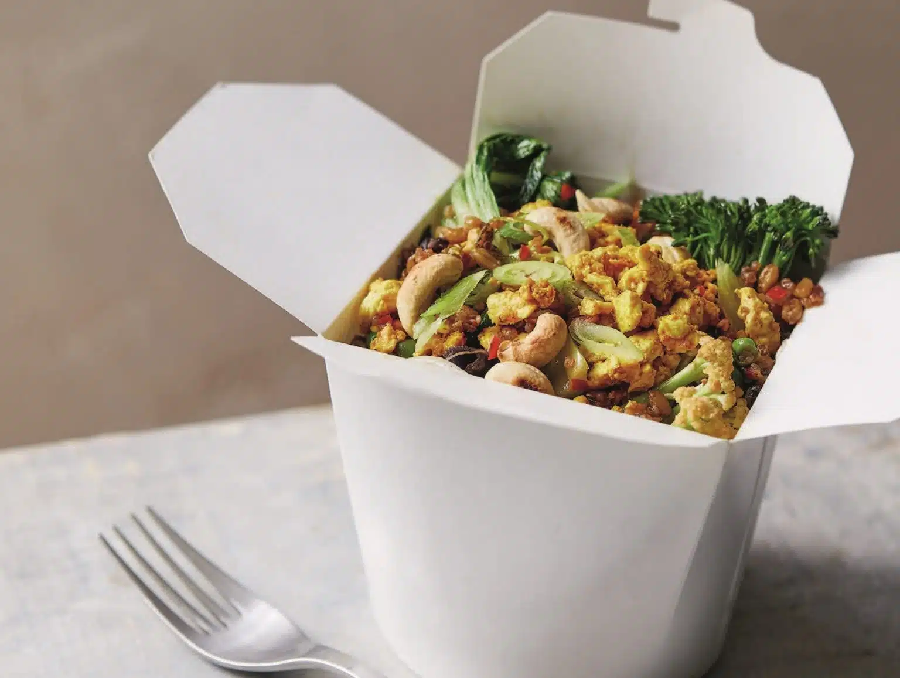

Tofu Fried Whole Grains With Crunchy Cashews

Description
It's easy to get stuck in a whole-grain rut, eating the same types on repeat. This delicious take on fried rice is here to show you that there are so many amazing textures and flavors in the world of whole grains. Plus, it doesn't just deliver on flavor, but fiber (11 grams) too, delivering a third of your daily goal.
Ingredients
- 9 ounces (255 g) precooked mixed whole grains, or 3.5 ounces (100 g) raw whole grains
- 1/3 cup (45 g) cashews
- 2 teaspoons sesame oil
- 1 large red chile, finely chopped (optional)
- 2 garlic cloves, grated or minced
- 2 teaspoons peeled, grated fresh ginger
- 3 cups (200 g) mixed sliced stir-fry vegetables (e.g., cabbage, carrots, peppers, red onion)
- 1/2 cup (50 g) bean sprouts (optional)
- 1/3 cup (50 g) peas, fresh or frozen
- 1 scallion, sliced
- 1 tablespoon soy sauce, plus more to taste
- Sea salt
- 1 teaspoon sesame oil
- 5 ounces (150 g) silken tofu
- 1 tablespoon nutritional yeast (optional)
- ¼ teaspoon paprika
- ¼ teaspoon ground turmeric
- ¼ teaspoon black pepper
Directions
- If you're cooking your own whole grains, cook them according to the package instructions.
- Heat a large frying pan over medium heat. Add the cashews and toast for a few minutes, stirring frequently. Remove from the pan and set aside.
- To make the tofu scramble, heat 1 teaspoon sesame oil in the same pan. Crumble in the tofu with your hands, then add the nutritional yeast (if using), paprika, turmeric, and black pepper. Cook until any liquid has reduced, 3 to 4 minutes.
- Remove from the pan and set aside.
- To the same pan, add another teaspoon of sesame oil along with the chile (if using), garlic, and ginger, and cook for 1 minute. Add the stir-fry vegetables, bean sprouts (if using), and peas. Cook for 3 to 4 minutes, so the veggies still have a little crunch to them.
- Stir in the tofu scramble, whole grains, scallion, and soy sauce, and cook for 1 to 2 minutes to heat through.
- Taste and adjust seasoning to preference, then serve topped with the toasted cashews.